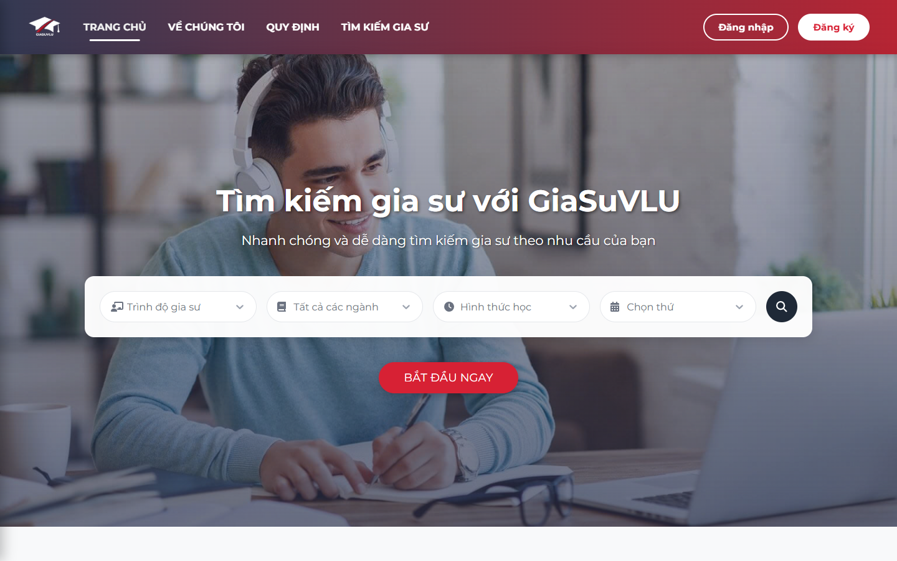

01 / EDUCATION · 2025TEAM CAPSTONE
GiaSuVLU
Connecting learners
and tutors.
STUDENT PROJECT / 2025Learn together.
Go further.Connecting learners & tutors
ORIGINAL CHARACTER / CREATIVE INTERPRETATIONGo further.Connecting learners & tutors
THE REAL PRODUCT01 / INTERFACE ↘

THE CHALLENGE
Create a space for Van Lang students and learners to connect, from finding a tutor to registering and learning online.
MY ROLE
I shaped the UX/UI and interface flows, developed the frontend and connected APIs. My teammate primarily built the database and APIs.
WHAT WORKED
Microsoft school-email sign-in worked. Zoom and payments reached API testing/demo only and were not completed due to legal and cost constraints.
FIGMA · REACT · API · MICROSOFT